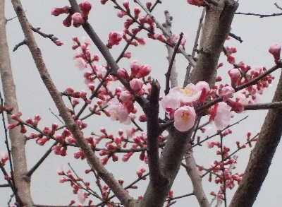
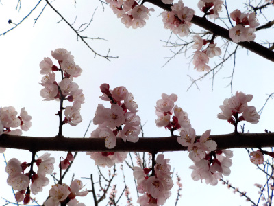
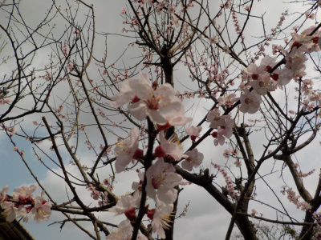
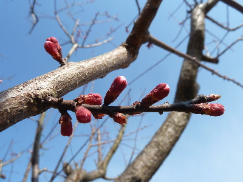
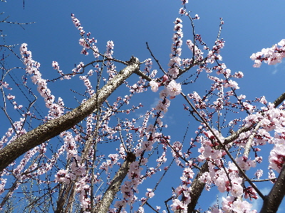
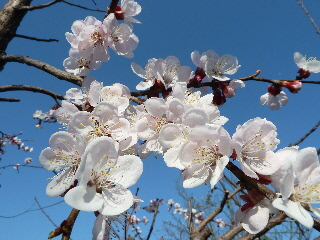
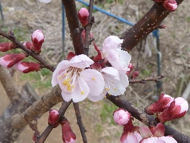

アンズがちょっと咲きました。
更新日 : 2024/03/17

もうちょっとしたら全体がピンクになります。
去年より開花が遅いです。温暖化で早くなるよりは遅い方がいいですね。
更新日 : 2024/03/17

もうちょっとしたら全体がピンクになります。
去年より開花が遅いです。温暖化で早くなるよりは遅い方がいいですね。
更新日 : 2023/03/19

枝に花がいっぱい付いています。
実が沢山出来そうです。
更新日 : 2021/03/14

写真で見ると暗いですが、肉眼では明るく綺麗に見れました。
桜並木じゃなくてアンズ並木があればいいのにって思いました。
更新日 : 2017/03/26

もうすぐ開花です。
来週は綺麗に咲いてるんだろうな。
更新日 : 2016/03/21

毎年綺麗な花が咲いていいです。
杏子の木が家にあって良かったって思いました。
お勧めの果樹です。
更新日 : 2015/03/28

綺麗です。いいものが見れました。
果物の花って綺麗なものが多くていいですね。
更新日 : 2013/03/17

東京ではソメイヨシノが開花のようですが、私の家では杏子の花が開花です。
まだ少しですが、蕾もすぐに咲きそうです。
ピンク色が綺麗ですね。
花はキレイだけど、隙間が多いかな。